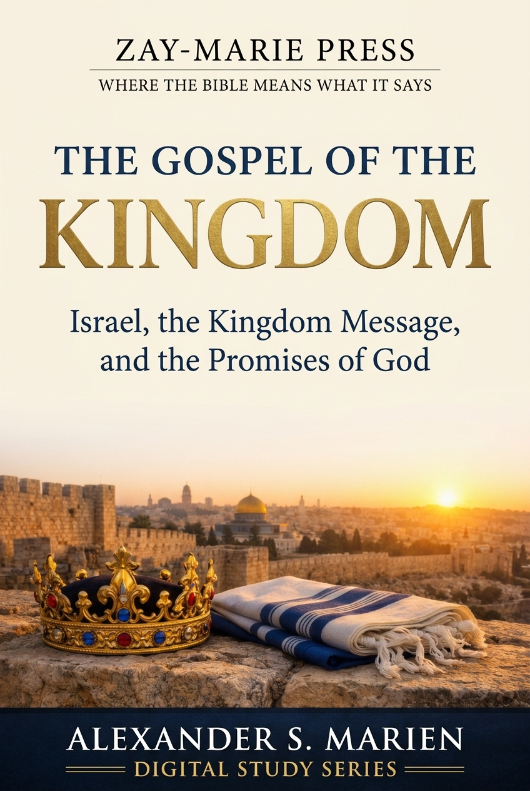
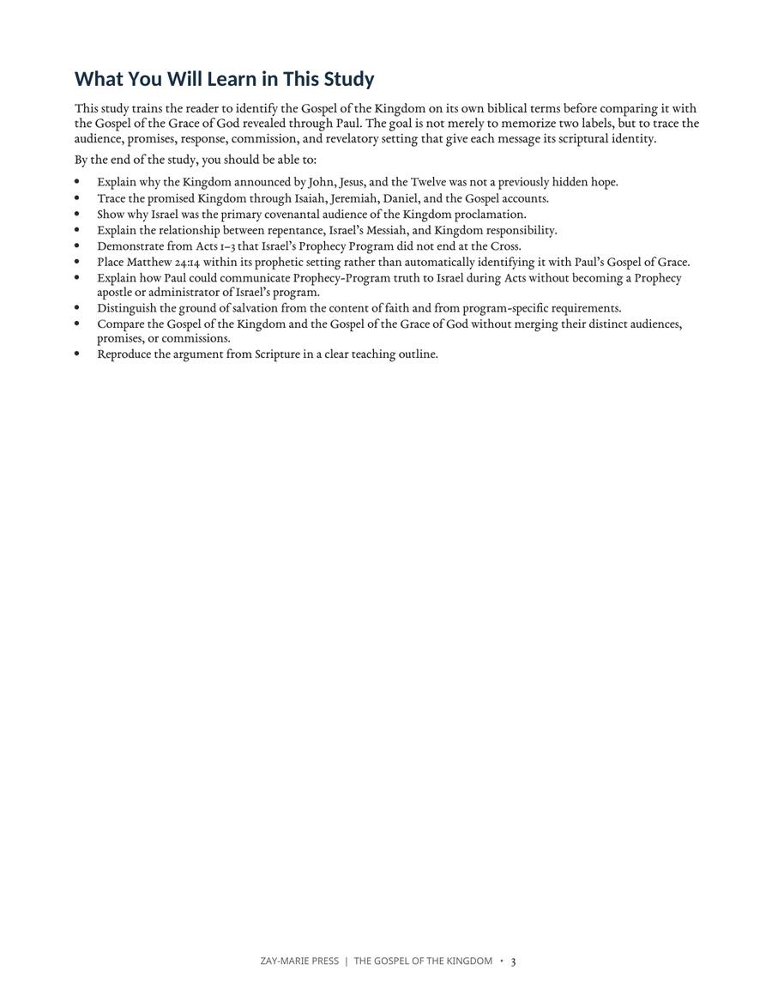
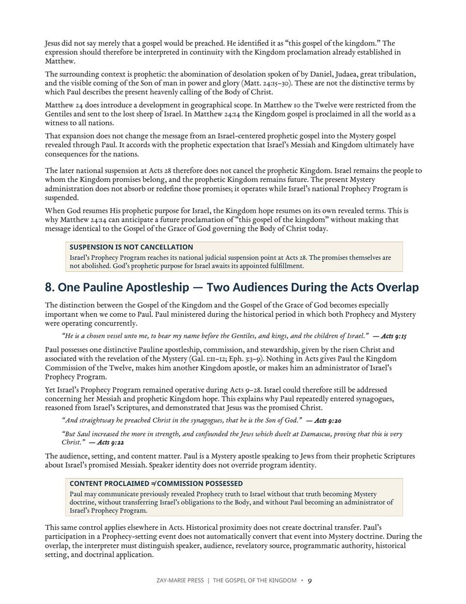
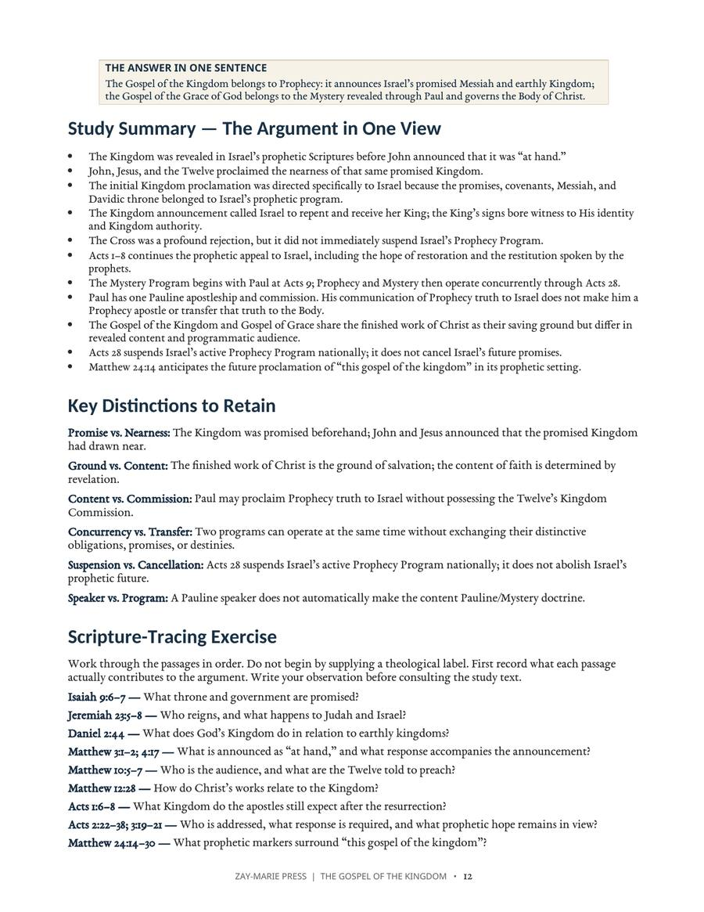

The Gospel of the Kingdom
Israel, the Kingdom Message, and the Promises of God
A Biblical Examination of Audience, Promise, Commission, and Revelatory Setting
Trace the Gospel of the Kingdom from Israel’s prophetic Scriptures through John, Jesus, the Twelve, and the early Acts appeal, then compare it carefully with the Gospel of the Grace of God revealed through Paul. This study distinguishes audience, promises, response, commission, and revelatory setting without merging Prophecy and Mystery.
Why Must the Gospel of the Kingdom Be Defined by Its Context?
The phrase “the gospel of the kingdom” is often treated as a general synonym for the message of salvation, but Scripture places it within a specific prophetic setting already known to Israel.
This study begins with the Kingdom promised in Isaiah, Jeremiah, and Daniel, traces its announcement through John the Baptist, Jesus Christ, and the Twelve, follows Israel’s prophetic appeal beyond the Cross into Acts, and then examines Paul during the Acts 9–28 overlap. The goal is to distinguish the Gospel of the Kingdom from the Gospel of the Grace of God without confusing distinct messages with different meritorious grounds of salvation.
How These Studies Relate
Study 2 establishes the Kingdom message: to whom it was announced, what it promised, and how its hearers were called to respond.
Study 20 — Understanding Acts 2:38 Examine Peter’s actual response to Israel at Pentecost, including repentance, baptism, remission, and the promised Spirit. The Kingdom setting clarifies why Acts 2:38 should be read in its own audience and prophetic setting.
Study 18 — Peter and Paul: Distinct Apostolic Commissions Compare Peter’s and Paul’s commissions during the Acts overlap. Their distinct assignments explain why Peter’s Kingdom proclamation and Paul’s ministry must be compared without merging them.
Trace the Kingdom Message From Prophecy Through the Acts Overlap
The Kingdom Promised Before Matthew
Establish the prophetic background of Messiah, David’s throne, Israel’s restoration, righteous government, and God’s rule among the nations.
John, Jesus & the Twelve
Follow the same “at hand” Kingdom announcement through John the Baptist, Jesus Christ, and the Twelve.
Israel as the Covenantal Audience
Examine why the initial Kingdom proclamation was directed to Israel and how covenant, Messiah, and Kingdom promises identify its setting.
The Prophetic Appeal After the Cross
Use Acts 1–3 to see why Israel’s Prophecy Program continued after the resurrection rather than ending at the Cross.
Paul During the Acts Overlap
Distinguish Paul’s one Mystery apostleship from Prophecy truth he could communicate to Israel while both programs operated concurrently.
Kingdom Gospel & Gospel of Grace
Compare audience, revealed content, promises, commission, and program while preserving the finished work of Christ as the saving ground.
Examine the Passages for Yourself
Isaiah 9:6–7
Places the promised Son upon David’s throne and describes the government and Kingdom already revealed in Prophecy.
Jeremiah 23:5–8
Promises a righteous Davidic King under whose reign Judah is saved and Israel dwells safely.
Daniel 2:44
Describes the Kingdom established by the God of heaven in relation to the kingdoms of this world.
Matthew 3:1–2; 4:17
Records John and Jesus announcing that Israel’s already-promised Kingdom had drawn near.
Matthew 10:5–7
Identifies Israel as the initial audience and records the Twelve proclaiming the same Kingdom announcement.
Acts 1:6–8; 3:19–21
Shows that Israel’s Kingdom expectation and prophetic appeal remained operative after the resurrection.
Acts 9:15, 20–22
Shows Paul’s distinctive calling while illustrating his ministry to Israel concerning her promised Messiah during the overlap.
Acts 20:24; 1 Corinthians 15:1–4
Provides Pauline testimony concerning the Gospel of Grace and the saving message proclaimed to the Body of Christ.
The Kingdom Was Promised Before It Was Announced as “At Hand”
“The Kingdom itself was not newly revealed. The prophetic Kingdom had already been made known; what John and Jesus announced was that the promised Kingdom had drawn near because the promised King was present.”
This distinction establishes the study’s starting point: the Gospel of the Kingdom belongs to Israel’s revealed prophetic hope. The study then follows that message through the Gospel accounts and Acts before comparing it with the previously hidden Mystery revealed through Paul.
Preview the Study Before You Purchase
Click any page to enlarge.
{kind=link}

What You Will Learn
See the study’s learning goals, including the Kingdom’s prophetic background, Israel’s audience, the Acts continuation, Paul’s one apostleship, and the ground/content distinction.
{kind=link}

Paul During the Acts Overlap
Preview the study’s treatment of Paul as a Mystery apostle addressing Israel from her prophetic Scriptures without acquiring the Twelve’s Kingdom Commission.
{kind=link}

Summary, Distinctions & Scripture Tracing
See the argument condensed into one view, followed by key interpretive distinctions and a Scripture-tracing exercise designed to reproduce the reasoning.
A Focused Study Built for
Understanding and Teaching
15-Page In-Depth Biblical Study
A focused examination that develops the Gospel of the Kingdom through sustained biblical argument rather than a brief overview.
20 Study Sections
Progress from the prophetic Kingdom promises through the Gospel accounts, Acts, Pauline revelation, comparison, and final synthesis.
Study Summary & Key Distinctions
Reinforce the central argument and retain crucial distinctions such as promise versus nearness, ground versus content, and concurrency versus transfer.
Scripture-Tracing Exercise
Work through the principal passages in sequence and record what each text contributes before consulting the study’s conclusions.
12 Review & Discussion Questions
Test comprehension of the Kingdom’s audience, prophetic setting, Acts chronology, Paul’s commission, and the distinction between the two gospel messages.
Nine-Part Teaching Outline
A ready framework for explaining the study’s argument from the prophets through Matthew, Acts, Paul, and the future Kingdom proclamation.
Five Guided Further-Study Investigations
Trace the Kingdom before Matthew, its announcement, the Acts appeal, Paul during the overlap, and the two gospel messages independently.
Final Synthesis Exercise
Bring the evidence together in a one-page explanation of the Kingdom gospel, its audience, its Acts continuation, and its distinction from the Gospel of Grace.
The Gospel of the Kingdom
15-page digital PDF · For personal use
Want More Than a Focused Study?
Digital Studies examine particular biblical subjects and difficult passages. The 40-lesson Biblical Hermeneutics course teaches a complete, repeatable method for establishing meaning in context, determining proper assignment, and making responsible application.